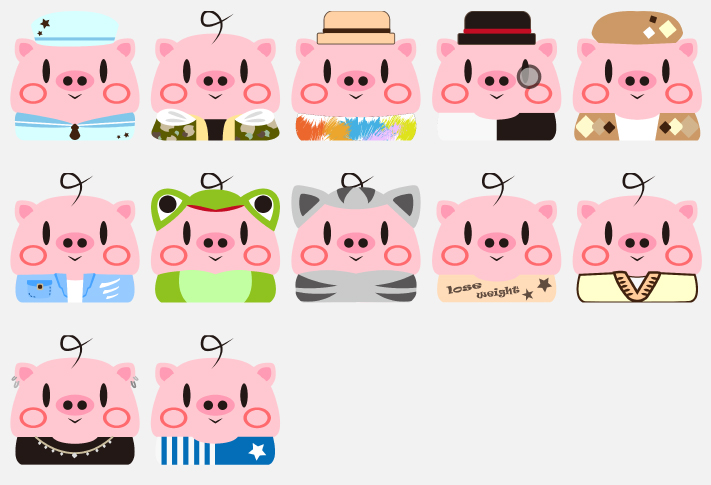

迷宮、劇情
遊戲架構
前情提要──
在一個豬豬村裡，動物們很快樂、很和平。有一隻豬叫小明，他個性好，又不挑食，豬媽媽煮的菜他都愛吃。所以他變成村裡最胖的豬，每年豬豬選胖比賽他都得第一，讓他家人都很開心。
豬豬們在村裡玩得很開心，所以都沒想到有敵人默默邊看著他們邊流口水。這個敵人就是狼大大，他每天都從村外看豬豬們辦的選胖比賽，所以可憐的小明變成狼大大心中最想吃的目標。
但是豬豬村的防禦很好，他一直無法進去。只能等在村外，只要有豬豬出來，那隻豬一定會變成狼大大的餐點。因此，總是有豬豬莫名其妙的失蹤。
幾年後，豬豬們覺得，胖已經不流行了，現在流行的是健壯的豬豬。但小明只要不吃飯他就睡不著覺，沒力氣走路，所以還是肥肥的。小明自己也是覺得流行這種東西對他沒差，所以他還是吃他的，不管別人怎麼笑他。
- 豬豬村後山
- 遊戲中旁白＆提示
野生小尼獸雖然不是肉食性動物，但吵到牠們絕對不會給你看!你知道小美嗎?她可是全村最受歡迎又漂亮的女生喔！她特別喜歡小尼獸，也常常帶著小泥獸玩偶趴趴走。她也很喜歡紫丁香，據說紫丁香的花語是初戀，想必她也很想談戀愛吧！她常常在開有紫丁香的地方出現。不過要小心喔！常常盯著你的阿雯也常常在紫丁香的地方出現，小心不要被他發現你喔。小美沒事的話應該就在充滿紫丁香的地方觀賞著小泥獸吧～去找找小美吧！ - 第一幕（豬豬村後山找到阿美後觸發）
在某天豬豬村裡最胖的小明見到村裡膚白貌美的村花阿美，便愛上了她。但阿美的生活都跟公主一樣，小明便覺得自己又胖又醜，阿美應該不會喜歡上他。
- 遊戲中旁白＆提示
- 豬豬村
- 麵包店
──未破任務前── 老闆:阿阿阿～沒了！！！怎麼在這種時候沒了阿阿阿！！！ 老闆:!!!咳咳…。嘿帥哥～又來買麵包呀？ 小明:不是啦～路過想說打個招呼～ 老闆:弟弟真乖～ 小明:話說叔叔怎麼慘叫呀？ 老闆:我要試做新麵包，可是材料沒了…現在店裡只有我一個人值班…. 小明:我來幫叔叔吧～要買甚麼呢～ 老闆:真的嗎！？我需要雞蛋７顆、牛奶５瓶、麵粉４袋 （得到了金幣＊３０） 小明:沒問題～ 老闆:真的很感謝！ ──破任務後── 小明:叔叔給你 （交出了牛奶、雞蛋、麵粉） 老闆:謝謝啦弟弟～真是幫大忙！來，這是給你的小費 小明:哇哇！不用了啦！ 老闆:客氣甚麼？來來來 （得到了金幣＊２０） 老闆:我發現其實我還有雞蛋耶哈哈哈，煮了雞蛋給你吃哈哈哈 （得到了雞蛋＊1） 小明:（…也太ㄎㄧㄤ）謝謝老闆
- 服飾店
──未破任務前── 小明:哈囉～阿強哥哥 服飾店年輕老闆阿強:嗨～小明，衣服隨便挑喔～ 小明:我只是路過來打招呼的～要準備去運動中心運動 阿強:哇～甚麼讓你開始運動呀 小明:我有想追的女孩嘿嘿 阿強:年輕真好～都有空追女孩～哀～我想送東西給女朋友，最近店裡太 忙沒甚麼空去找，哀... 小明:找甚麼呀？我來幫你吧！ 阿強:真的嗎？豬豬村後山有紫丁香，我女友很喜歡，我想收集５朵 小明:交給我吧！ 阿強:謝謝你～ ──破任務後── （交出了紫丁香） 阿強:哇哇謝謝你耶真的幫大忙！ 阿強:對了，你剛剛說你有想追的女生對吧，我把我身邊目前沒賣、多出來 的衣服送你穿吧！ 小明:真的假的！ 阿強:要告白的時候穿帥一點呀～ 小明:謝謝阿強哥哥！
- 小泥獸棲息地
──未破任務前── 鄰居阿文:我的袋子… 小明:阿文，你怎麼一個人在這種地方 阿文:是小明呀…我的袋子被小泥獸搶走了… 小明:我猜你袋子裡面是不是裝了雞蛋 阿文:對!!!我剛剛去超市完想說順便來公園散散步，結果就… 小明:我幫你拿回袋子吧！ 阿文:謝謝小明～ ──破任務後── （交出阿文的袋子） 阿文:謝謝小明～
- 第二幕（豬豬村破完所有任務觸發）
因為豬豬村的審美是以健壯為好，小明為了得到阿美的芳心。小明努 力健身，並決定去白鸛村取得超級蘋果，變成完美身材。
- 麵包店
- 村外小徑
- 剛進入此關卡時
？？？:救命啊！！！ 小明:!!!???該不會是被狼突襲了！？聲音是從前方傳來的！去救那個人 吧！ ──找到阿文── 阿文:...咦？這不是小明嗎？又見面了 小明:原來是阿文呀...你怎麼又一個人在危險的地方... 阿文:想要出村外探險呀！ 小明:......(差點探出命了大哥) 阿文:那你怎麼會在這? 小明:我要去白鸛村一趟 阿文:原來，那你要小心喔，為了防止狼大大突襲我們村莊，路上設置了很 多機關！ 阿文:狼還有一隻是首領狼大大，光用一般的道具攻擊是不行的，我記得村 莊的小尼獸棲息地藏著可以制服狼大大的毒蘋果 阿明:了解了，謝謝你呀！趕快回村莊吧！ 阿文:我想要在探險一會耶嘿～對了，這個是謝謝你幫助我的獎勵 （得到了藥丸*2、雞蛋*2） 阿明:...(算了，目前這附近沒有狼就隨他開心吧)
- 第三幕（村外小徑找到白鸛村路口後觸發）
去白鸛村的路上危險重重，一路上狼大大一直跟著小明，並想吃了他。
- 剛進入此關卡時
- 白鸛村
- 第四幕（白鸛村找到白鸛後觸發）
在小明去白鸛村時，阿美其實一直很擔心他。阿美心裡一直喜歡著胖胖、個性又好的小明，卻沒有勇氣跟小明說。等到小明回來後，阿美已經變成肥阿美，但在小明心目中，阿美肥或瘦，他都愛。最後小明也跟阿美吃很多，所以等到結婚那天，他們倆個就成了肥小明跟肥阿美。
- 第四幕（白鸛村找到白鸛後觸發）
- 豬豬村後山
- 收集愛心找到小美所在出口
- 要收集的最後一顆愛心附近，設置阿雯隨機亂走
- 不能提前進入出口，否則會遇到阿雯
- 碰到小泥獸扣１顆愛心
- 每收集一顆愛心在側邊欄會獲得小提示
- 豬豬村
- 探索豬豬村，完成NPC的任務
麵包店： －幫麵包店老闆購買材料 －完成可獲得獎勵： 雞蛋＊１、 豬豬金幣＊２０ 超市： －可購買老闆所需材料 －可購買輔助道具雞蛋 小泥獸棲息地： －幫助阿文拿包包。因為 小泥獸喜歡吃雞蛋，須 購買雞蛋給小泥獸，牠 才會讓玩家過去 －藏著村外小徑破關道具 ：毒蘋果 服飾店： －幫麵包店老闆收集紫丁香 －完成可獲得獎勵： 解鎖換裝衣櫃 藥局、運動中心： －買輔助道具藥丸跟啞鈴
- 備註
公園有小泥獸堵住通往小泥獸棲息地的路，需要給牠雞蛋牠才會消失
- 探索豬豬村，完成NPC的任務
- 村外小徑
- 找到阿文，他會給獎勵道具：
雞蛋＊２、藥丸＊２ - 找到白鸛村路口
- 機關：
斜坡機關：角色移動速度變化，上坡慢下坡快
草叢機關：射出機關，碰到扣１顆愛心
道路機關：一下出現一下不出現，碰到扣１顆愛心
傳送陷阱：被傳送到未知的地方
沼澤：角色移動速度變慢 - 小狼、狼大大（黑）：
碰到會扣一顆愛心，狼大大（黑）要用毒蘋果毒牠
- 找到阿文，他會給獎勵道具：
- 白鸛村
- 收集特殊紫丁香，解鎖前往通關出口的路，找到白鸛迎向結局
- 機關：
斜坡機關：角色移動速度變化，上坡慢下坡快
觸電機關：會讓角色不規則晃動
傳送陷阱：被傳送到未知的地方
水坑：角色移動速度變慢 - 白色小泥獸：
會四處不規則亂彈，碰到扣１顆愛心 - 出口設置阿雯隨機亂走，碰到遊戲結束（輸）
遊戲美術
角色
機關
輔助物件
服裝
磚塊
其他物件

地圖
房間(換裝+選擇關卡)
開始畫面＆結束畫面（輸）
劇情圖
| 背景音樂(開始) | 1_start.mp3 | 第一關背景音樂 | PART1.mp3 | 第二關背景音樂 | PART2.mp3 | 第三關背景音樂 | PART3.mp3 |
| 第四關背景音樂 | PART4.mp3 | 房間背景音樂 | room.mp3 | 瞬移的聲音 | change_place.wav | 得到東西、加錢、減錢的聲音 | coin.mp3 |
| 吃到東西的聲音 | eat_heart.wav | 給東西的聲音 | give.mp3 | 撞到小泥獸的聲音 | hit_the_wall.wav | 跳 | jump.mp3 |
| 發射 | shoot.mp3 | 水聲 | water.mp3 | 風聲 | wind.mp3 | 遊戲失敗 | gameover.wav |
時程規劃

小組分工
蔡易辰：美術、關卡整體設計、關卡劇情腳本、地圖設計、企畫書統整
張舒涵：程式碼、圖片整合(開頭遊戲說明＆前情提要、地圖)、四幕旁白腳本、音效設計、關卡輔助設計
江若仙：程式碼、報告、影片錄製、管理組員專題進度＆分工、關卡輔助設計
裴氏瓊如：程式碼、遊戲整體劇情故事發想＆內容＆架構、關卡輔助設計
張舒涵：程式碼、圖片整合(開頭遊戲說明＆前情提要、地圖)、四幕旁白腳本、音效設計、關卡輔助設計
江若仙：程式碼、報告、影片錄製、管理組員專題進度＆分工、關卡輔助設計
裴氏瓊如：程式碼、遊戲整體劇情故事發想＆內容＆架構、關卡輔助設計